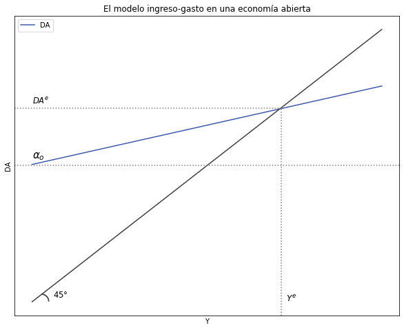
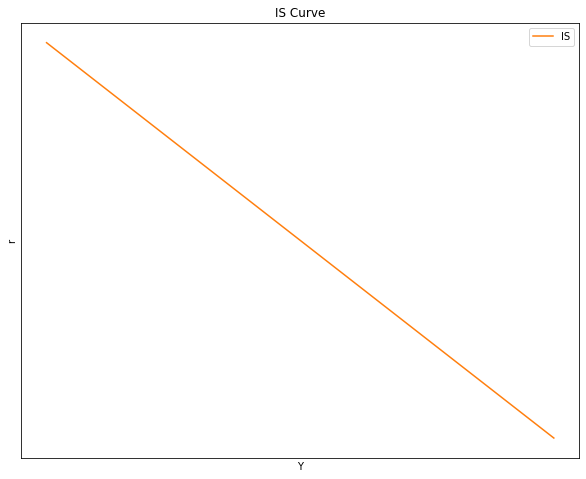
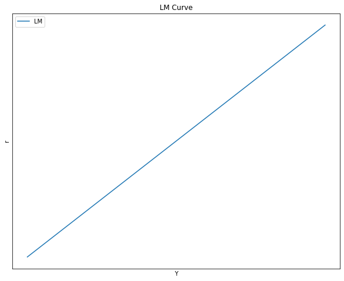
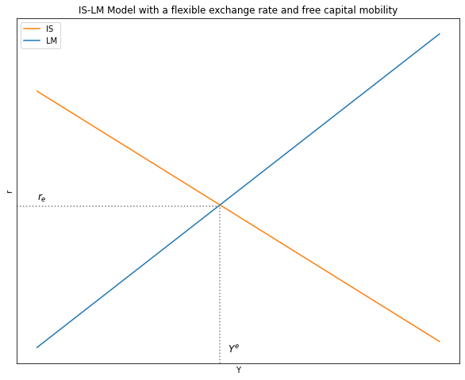
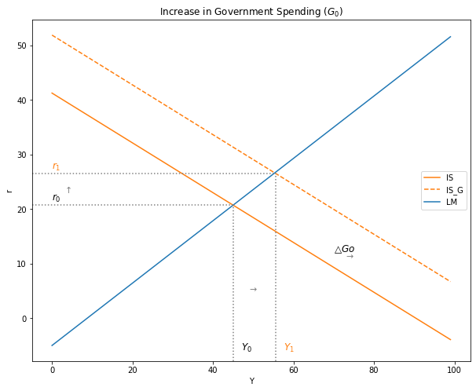
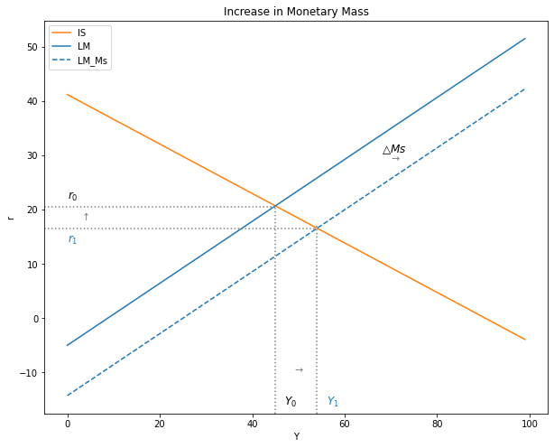

Tutorial 7:
Contents
%matplotlib inline
import matplotlib.pyplot as plt
import numpy as np
import sympy as sy
import pandas as pd
import numpy as np
import random
import math
import sklearn
import scipy as sp
import networkx
import statsmodels.api as sm
import statsmodels.formula.api as smf
from statsmodels.iolib.summary2 import summary_col
from causalgraphicalmodels import CausalGraphicalModel
Tutorial 7:#
1. Derivation of the Aggregate Demand \((DA)\):#
# Parámetros
Y_size = 100
Co = 35
Io = 40
Go = 50
h = 0.8
b = 0.9
m = 0.5
t = 0.1
x1 = 0.3
Yº = 12
x2 = 0.6
m2 = 0.4
Eo = 9
p = 0.8
rº = 8
r = 12
m1 = 0.1
Y = np.arange(Y_size)
# Ecuación
def DA(Co, Io, Go, h, b, m, t, x1, Yº, x2, m2, Eo, p, rº, r, m1):
DA = [Co + Io + Go + x1 *Yº +(x2 + m2)* Eo + (x2 + m2)* p*rº -(h +(x2 +m2)*p)*r]+[(b-m1)*(1-t)]*Y
return DA
DA = DA(Co, Io, Go, h, b, m, t, x1, Yº, x2, m2, Eo, p, rº, r, m1)
# Recta de 45°
a = 2.5
def L_45(a, Y):
L_45 = a*Y
return L_45
L_45 = L_45(a, Y)
# Gráfico
# Dimensiones del gráfico
y_max = np.max(Y)
fig, ax = plt.subplots(figsize=(10, 8))
# Curvas a graficar
ax.plot(Y, DA, label = "DA", color = "#3D59AB") #Demanda agregada
ax.plot(Y, L_45, color = "#404040") #Línea de 45º
# Eliminar las cantidades de los ejes
ax.yaxis.set_major_locator(plt.NullLocator())
ax.xaxis.set_major_locator(plt.NullLocator())
# Líneas punteadas
plt.axvline(x=70.5, ymin= 0, ymax= 0.69, linestyle = ":", color = "grey")
plt.axhline(y=124, xmin= 0, xmax= 1, linestyle = ":", color = "grey")
plt.axhline(y=176, xmin= 0, xmax= 0.7, linestyle = ":", color = "grey")
# Texto agregado
plt.text(0, 180, '$DA^e$', fontsize = 11.5, color = 'black')
plt.text(0, 130, '$α_o$', fontsize = 15, color = 'black')
plt.text(6, 4, '$45°$', fontsize = 11.5, color = 'black')
plt.text(2.5, -3, '$◝$', fontsize = 30, color = '#404040')
plt.text(72, 0, '$Y^e$', fontsize = 12, color = 'black')
# Título y leyenda
ax.set(title="El modelo ingreso-gasto en una economía abierta", xlabel= r'Y', ylabel= r'DA')
ax.legend()
plt.show()

2. The IS-LM model with a flexible exchange rate and free capital mobility:#
# IS
Y_size = 100
Co = 25
Io = 5
Go = 18
h = 0.8
b = 0.4
m = 0.5
t = 0.1
x1 = 0.3
Yº = 12
x2 = 0.6
m2 = 0.4
Eo = 8
p = 0.8
rº = 8
m1 = 0.1
Y = np.arange(Y_size)
# Ecuación
def r_IS(Co, Io, Go, h, b, m, t, x1, Yº, x2, m2, Eo, p, rº, r, m1):
r_IS = ((Co + Io + Go + (x2+m2)*Eo + (x2+m2)*p*rº+x1*Yº)/(h+(x2+m2)*p)) - (((1-(b-m1)*(1-t))*Y)/(h+(x2+m2)*p))
return r_IS
r_IS = r_IS(Co, Io, Go, h, b, m, t, x1, Yº, x2, m2, Eo, p, rº, r, m1)
# Gráfico de la curva IS
# Dimensiones del gráfico
y_max = np.max(Y)
fig, ax = plt.subplots(figsize=(10, 8))
# Curvas a graficar
ax.plot(Y, r_IS, label = "IS", color = "C1") #Demanda agregada
# Eliminar las cantidades de los ejes
ax.yaxis.set_major_locator(plt.NullLocator())
ax.xaxis.set_major_locator(plt.NullLocator())
# Título, ejes y leyenda
ax.set(title = "IS Curve", xlabel= 'Y', ylabel= 'r')
ax.legend()
plt.show()

# LM
Y_size = 100
k = 0.4
j = 0.7
Ms = 70
Po = 20
Y = np.arange(Y_size)
# Ecuación
def r_LM( k, j, Ms, Po, Y):
r_LM = (-Ms/Po)/j + k/j*Y
return r_LM
r_LM = r_LM( k, j, Ms, Po, Y)
# Gráfico de la curva LM
# Dimensiones del gráfico
y_max = np.max(Y)
v = [0, Y_size, 0, y_max]
fig, ax = plt.subplots(figsize=(10, 8))
# Eliminar las cantidades de los ejes
ax.yaxis.set_major_locator(plt.NullLocator())
ax.xaxis.set_major_locator(plt.NullLocator())
# Curvas a graficar
ax.plot(Y, r_LM, label="LM", color = 'C0')
# Título y leyenda
ax.set(title="LM Curve", xlabel=r'Y', ylabel=r'r')
ax.legend()
plt.show()

# Gráfico del modelo IS-LM
# Dimensiones del gráfico
y_max = np.max(Y)
fig, ax = plt.subplots(figsize=(10, 8))
# Curvas a graficar
ax.plot(Y, r_IS, label = "IS", color = "C1") #IS
ax.plot(Y, r_LM, label="LM", color = "C0") #LM
# Eliminar las cantidades de los ejes
ax.yaxis.set_major_locator(plt.NullLocator())
ax.xaxis.set_major_locator(plt.NullLocator())
# Texto y líneas agregadas
plt.axhline(y=20.5, xmin= 0, xmax= 0.46, linestyle = ":", color = "grey")
plt.axvline(x=45, ymin= 0, ymax= 0.46, linestyle = ":", color = "grey")
plt.text(0, 21.5, '$r_e$', fontsize = 12, color = 'black')
plt.text(47, -6, '$Y^e$', fontsize = 12, color = 'black')
# Título, ejes y leyenda
ax.set(title="IS-LM Model with a flexible exchange rate and free capital mobility", xlabel= r'Y', ylabel= r'r')
ax.legend()
plt.show()

3.1 Comparative Statics:#
- Increase in Government Spending \(G_0\):#
# IS
Y_size = 100
Co = 25
Io = 5
Go = 18
h = 0.8
b = 0.4
m = 0.5
t = 0.1
x1 = 0.3
Yº = 12
x2 = 0.6
m2 = 0.4
Eo = 8
p = 0.8
rº = 8
m1 = 0.1
Y = np.arange(Y_size)
# Ecuación
def r_IS(Co, Io, Go, h, b, m, t, x1, Yº, x2, m2, Eo, p, rº, r, m1):
r_IS = ((Co + Io + Go + (x2+m2)*Eo + (x2+m2)*p*rº+x1*Yº)/(h+(x2+m2)*p)) - (((1-(b-m1)*(1-t))*Y)/(h+(x2+m2)*p))
return r_IS
r_IS = r_IS(Co, Io, Go, h, b, m, t, x1, Yº, x2, m2, Eo, p, rº, r, m1)
#------------
Go = 35
# Ecuación
def r_IS_G(Co, Io, Go, h, b, m, t, x1, Yº, x2, m2, Eo, p, rº, r, m1):
r_IS = ((Co + Io + Go + (x2+m2)*Eo + (x2+m2)*p*rº+x1*Yº)/(h+(x2+m2)*p)) - (((1-(b-m1)*(1-t))*Y)/(h+(x2+m2)*p))
return r_IS
r_IS_G = r_IS_G(Co, Io, Go, h, b, m, t, x1, Yº, x2, m2, Eo, p, rº, r, m1)
# Gráfico del modelo IS-LM
# Dimensiones del gráfico
y_max = np.max(Y)
fig, ax = plt.subplots(figsize=(10, 8))
# Curvas a graficar
ax.plot(Y, r_IS, label = "IS", color = "C1") #IS
ax.plot(Y, r_IS_G, label = "IS_G", color = "C1", linestyle ='dashed') #IS
ax.plot(Y, r_LM, label="LM", color = "C0") #LM
# Texto y líneas agregadas
plt.axhline(y=20.7, xmin= 0, xmax= 0.46, linestyle = ":", color = "grey")
plt.axvline(x=45, ymin= 0, ymax= 0.46, linestyle = ":", color = "grey")
plt.axhline(y=26.5, xmin= 0, xmax= 0.55, linestyle = ":", color = "grey")
plt.axvline(x=55.6, ymin= 0, ymax= 0.55, linestyle = ":", color = "grey")
plt.text(0, 21.5, '$r_0$', fontsize = 12, color = 'black')
plt.text(47, -6, '$Y_0$', fontsize = 12, color = 'black')
plt.text(0, 27.3, '$r_1$', fontsize = 12, color = 'C1')
plt.text(57.6, -6, '$Y_1$', fontsize = 12, color = 'C1')
plt.text(73, 11, '$→$', fontsize = 11, color = 'grey')
plt.text(49, 5, '$→$', fontsize = 11, color = 'grey')
plt.text(3, 23, '$↑$', fontsize = 11, color = 'grey')
plt.text(70, 12.2, '$△Go$', fontsize = 12, color = 'black')
# Título, ejes y leyenda
ax.set(title="Increase in Government Spending $(G_0)$", xlabel= r'Y', ylabel= r'r')
ax.legend()
plt.show()

- Incrase in Monetary Mass \(M_o^s\):#
# LM
Y_size = 100
k = 0.4
j = 0.7
Ms = 70
Po = 20
Y = np.arange(Y_size)
# Ecuación
def r_LM( k, j, Ms, Po, Y):
r_LM = (-Ms/Po)/j + k/j*Y
return r_LM
r_LM = r_LM( k, j, Ms, Po, Y)
#------------------------------------------------
# Nueva Curva LM
Ms = 200
# Ecuación
def r_LM_Ms( k, j, Ms, Po, Y):
r_LM = (-Ms/Po)/j + k/j*Y
return r_LM
r_LM_Ms = r_LM_Ms( k, j, Ms, Po, Y)
# Gráfico del modelo IS-LM
# Dimensiones del gráfico
y_max = np.max(Y)
fig, ax = plt.subplots(figsize=(10, 8))
# Curvas a graficar
ax.plot(Y, r_IS, label = "IS", color = "C1") #IS
ax.plot(Y, r_LM, label="LM", color = "C0") #LM
ax.plot(Y, r_LM_Ms, label="LM_Ms", color = "C0", linestyle = 'dashed') #LM
# Texto y líneas agregadas
plt.axhline(y=20.5, xmin= 0, xmax= 0.46, linestyle = ":", color = "grey")
plt.axvline(x=45, ymin= 0, ymax= 0.53, linestyle = ":", color = "grey")
plt.axhline(y=16.5, xmin= 0, xmax= 0.54, linestyle = ":", color = "grey")
plt.axvline(x=54, ymin= 0, ymax= 0.48, linestyle = ":", color = "grey")
plt.text(0, 22, '$r_0$', fontsize = 12, color = 'black')
plt.text(47, -16, '$Y_0$', fontsize = 12, color = 'black')
plt.text(0, 14, '$r_1$', fontsize = 12, color = 'C0')
plt.text(56, -16, '$Y_1$', fontsize = 12, color = 'C0')
plt.text(70, 29, '$→$', fontsize = 11, color = 'grey')
plt.text(49, -10, '$→$', fontsize = 11, color = 'grey')
plt.text(3, 18, '$↑$', fontsize = 11, color = 'grey')
plt.text(68, 30.5, '$△Ms$', fontsize = 12, color = 'black')
# Título, ejes y leyenda
ax.set(title="Increase in Monetary Mass", xlabel= r'Y', ylabel= r'r')
ax.legend()
plt.show()
